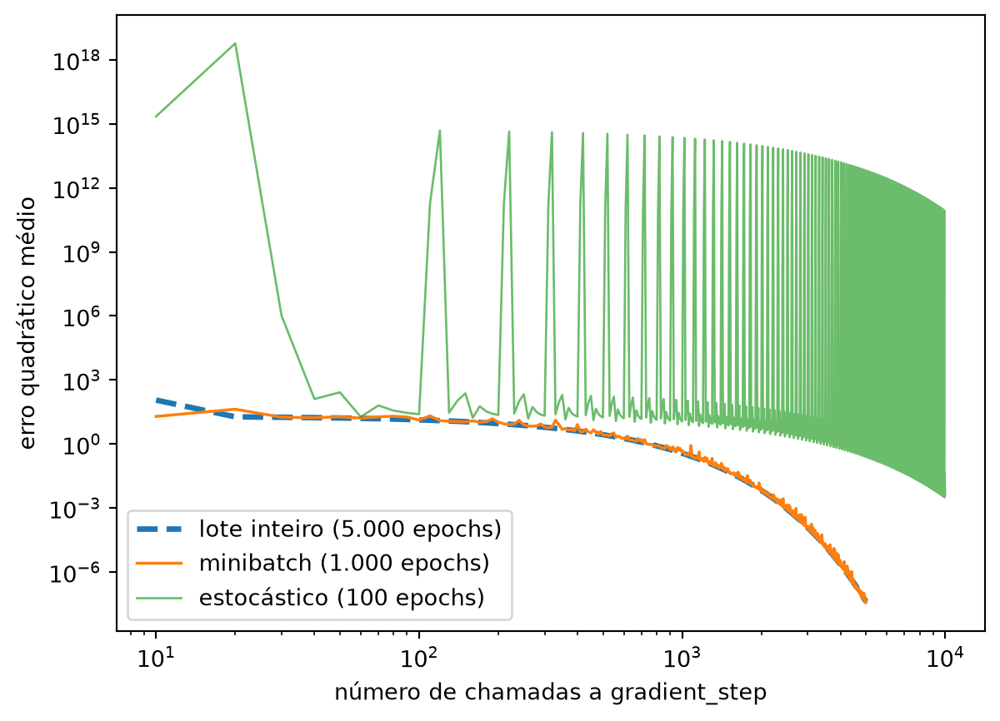

from typing import TypeVar, List, Iterator
T = TypeVar('T') # isso nos permite criar funções "genéricas"
def minibatches(dataset: List[T],
batch_size: int,
shuffle: bool = True) -> Iterator[List[T]]:
"""Gera minibatches de tamanho `batch_size` a partir do dataset"""
# Índices de início: 0, batch_size, 2 * batch_size, ...
batch_starts = [start for start in range(0, len(dataset), batch_size)]
if shuffle: random.shuffle(batch_starts) # embaralha os lotes
for start in batch_starts:
end = start + batch_size
yield dataset[start:end]Minibatch e Gradiente Estocástico
Nota
Esta seção corresponde a Minibatch and Stochastic Gradient Descent, do capítulo 8 de Grus (2019).
Uma desvantagem da abordagem anterior é que tínhamos que avaliar os gradientes sobre o conjunto de dados inteiro antes de dar um único passo de gradiente e atualizar nossos parâmetros. Nesse caso, tudo bem, porque nosso conjunto de dados tinha só 100 pares e o cálculo do gradiente era barato.
Na prática, porém, você vai trabalhar com conjuntos de dados grandes e gradientes caros de calcular. Nesse caso, você vai querer dar passos de gradiente com mais frequência.
Minibatch
Podemos fazer isso usando uma técnica chamada gradiente descendente por minibatch, na qual calculamos o gradiente (e damos um passo de gradiente) com base num “minibatch” amostrado do conjunto de dados maior:
TypeVar('T') só existe para permitir que minibatches seja genérica: dataset pode ser uma lista de qualquer tipo, e a saída acompanha esse tipo. minibatches é o primeiro gerador que este livro usa para valer — se yield ainda não é intuitivo, a seção 2.5 deste livro cobre geradores em detalhe.
gradient_step e linear_gradient já foram escritas nas seções 5.3 e 5.5; vector_mean vem do Capítulo 4. Importamos as três, como a seção 5.4 explicou:
import random
from scratch.gradient_descent import gradient_step, linear_gradient
from scratch.linear_algebra import Vector, vector_mean
inputs = [(x, 20 * x + 5) for x in range(-50, 50)]
learning_rate = 0.001
def mse(theta: Vector, dados) -> float:
slope, intercept = theta
return sum((slope * x + intercept - y) ** 2 for x, y in dados) / len(dados)O que cada lote realmente contém
Antes de treinar, vale olhar o que cada lote de 20 pontos realmente contém. theta = [0, 0] é um bom ponto para medir: nele, o gradiente do conjunto de dados inteiro deveria refletir o dataset como um todo.
theta0 = [0.0, 0.0]
for inicio in range(0, 100, 20):
lote = inputs[inicio:inicio + 20]
grad_lote = vector_mean([linear_gradient(x, y, theta0) for x, y in lote])
print(f"lote x∈[{lote[0][0]}, {lote[-1][0]}]: gradiente = {grad_lote}")
grad_geral = vector_mean([linear_gradient(x, y, theta0) for x, y in inputs])
print(f"dataset inteiro: gradiente = {grad_geral}")lote x∈[-50, -31]: gradiente = [-66535.0, 1610.0]
lote x∈[-30, -11]: gradiente = [-17935.0, 810.0]
lote x∈[-10, 9]: gradiente = [-1335.0, 10.0]
lote x∈[10, 29]: gradiente = [-16735.0, -790.0]
lote x∈[30, 49]: gradiente = [-64135.0, -1590.0]
dataset inteiro: gradiente = [-33335.0, 10.0]
AvisoUm
shuffle que não embaralha
minibatches embaralha batch_starts — os índices de início dos lotes —, não os pontos do dataset. Como inputs está ordenado por x, cada lote é sempre a mesma fatia contígua: o primeiro é sempre “x de −50 a −31”, o último é sempre “x de 30 a 49”. Embaralhar a ordem em que essas cinco fatias fixas são processadas não muda o que cada fatia é.
E o que cada fatia é, é uma amostra sistematicamente torta — não ruidosa, torta. Acima, o gradiente do dataset inteiro tem um termo de intercepto quase nulo (10), porque os erros positivos e negativos se cancelam quando você olha para todo x. Mas o termo de intercepto de cada lote isolado varia de +1610 a -1590 — o sinal inverte conforme a fatia está do lado negativo ou positivo de x. Cada lote empurra theta na direção que corrige aquela fatia, não na direção que corrige o dataset inteiro. Embaralhar a ordem dos cinco não desfaz o viés de nenhum deles.
O conserto tem uma linha: embaralhar o dataset, de novo a cada epoch, antes de gerar os lotes — não os índices de início.
def treina_minibatch(embaralha_dataset: bool, seed: int, n_epochs: int = 1000):
random.seed(seed)
theta = [random.uniform(-1, 1), random.uniform(-1, 1)]
dataset = inputs[:]
erros = [mse(theta, inputs)]
for epoch in range(1, n_epochs + 1):
if embaralha_dataset:
random.shuffle(dataset) # <-- o conserto de uma linha
for batch in minibatches(dataset, batch_size=20, shuffle=not embaralha_dataset):
grad = vector_mean([linear_gradient(x, y, theta) for x, y in batch])
theta = gradient_step(theta, grad, -learning_rate)
if epoch % 20 == 0:
erros.append(mse(theta, inputs))
return theta, erros
theta_enviesado, erros_enviesado = treina_minibatch(embaralha_dataset=False, seed=1)
theta_corrigido, erros_corrigido = treina_minibatch(embaralha_dataset=True, seed=1)
def subidas(erros):
"""Quantas vezes o erro sobe de um checkpoint para o outro."""
return sum(1 for antes, depois in zip(erros, erros[1:]) if depois > antes)
subidas(erros_enviesado), subidas(erros_corrigido), len(erros_enviesado) - 1(18, 7, 50)Em 50 checkpoints ao longo de 1.000 epochs, a versão original sobe 18 vezes; a corrigida, 7. Não zera — um lote de 20 pontos, mesmo sorteado direito, ainda é uma amostra, e amostras têm variância —, mas a maior fonte de ruído, o viés sistemático das fatias fixas, desaparece. No epoch 100, por exemplo, o erro da versão original está em 55,8; o da corrigida, em 2,6. Daqui em diante, o resto desta seção usa a versão corrigida — embaralhando o dataset a cada epoch.
Gradiente estocástico
Outra variação é o gradiente descendente estocástico, no qual você dá passos de gradiente com base em um único exemplo de treino por vez:
random.seed(2)
theta = [random.uniform(-1, 1), random.uniform(-1, 1)]
for epoch in range(100):
for x, y in inputs:
grad = linear_gradient(x, y, theta)
theta = gradient_step(theta, grad, -learning_rate)
slope, intercept = theta
assert 19.9 < slope < 20.1, "a inclinação deveria ser aproximadamente 20"
assert 4.9 < intercept < 5.1, "o intercepto deveria ser aproximadamente 5"
slope, intercept(20.001121847573497, 4.944162658006324)Em 100 epochs — um décimo do minibatch, um cinquentavo do lote inteiro —, o estocástico também chega perto de [20, 5].
Comparando os três
Só que “100 epochs” e “5.000 epochs” não medem a mesma coisa. Um epoch de lote inteiro dá 1 passo de gradiente; um epoch de minibatch (lotes de 20) dá 5; um epoch estocástico dá 100 — um por ponto. Comparar pelo número de epochs é comparar corridas com orçamentos de trabalho diferentes.
NotaQuantas vezes
gradient_step foi chamado
Lote inteiro: 5.000 epochs × 1 passo = 5.000 chamadas. Minibatch: 1.000 epochs × 5 passos = 5.000 chamadas — o mesmo total, apesar de dez vezes menos epochs. Estocástico: 100 epochs × 100 passos = 10.000 chamadas — o dobro dos outros dois, apesar de ser o que “venceu” em epochs.
A comparação justa é pelo número de chamadas a gradient_step, não pelo número de epochs:

Repare primeiro nas curvas tracejada (lote inteiro) e fina (minibatch): a partir de umas poucas dezenas de chamadas, elas praticamente se sobrepõem, e a tracejada corre por baixo da fina pelo resto do gráfico. Isso não é um defeito da figura — é o próprio argumento desta seção: com o mesmo orçamento de chamadas a gradient_step, as duas chegam à mesma precisão.
O que salta aos olhos é a linha verde: ela não desce, ela serrilha. Só o epoch 1 dispara acima de 10¹⁵ — para 6,9 × 10¹⁸, bem acima do resto do gráfico —; os picos dos epochs seguintes, embora recorrentes, ficam sistematicamente abaixo dessa faixa, o maior deles (epoch 2) em 5,7 × 10¹⁴. Não é ruído de plotagem — é gradient_step divergindo, ponto a ponto, exatamente como a caixa da seção 5.4 descreveu para um v inteiro.
inputs está ordenado por x, e o laço estocástico processa os pontos nessa ordem — começando sempre por x = -50. No início do primeiro epoch, com theta ainda longe do valor certo, o gradiente naquele único ponto já é enorme:
random.seed(2)
theta_demo = [random.uniform(-1, 1), random.uniform(-1, 1)]
for x, y in inputs[:4]:
grad = linear_gradient(x, y, theta_demo)
theta_demo = gradient_step(theta_demo, grad, -learning_rate)
print(f"x = {x:4d} theta = {theta_demo}")x = -50 theta = [95.94129132229787, -1.0049294814516887]
x = -49 theta = [-269.3172726965588, 6.449326927096407]
x = -48 theta = [1063.9958552741857, -21.32802990562743]
x = -47 theta = [-3550.8526681382964, 76.86023654995728]theta pula de perto de [0.9, 0.9] para [95.9, -1.0] — passa direto pelo 20 certo —, e o próximo ponto (x = -49), vendo um erro ainda maior, supercorrige para o lado oposto, [-269, 6.4]. É a mesma cascata de supercorreção da seção 5.4, só que provocada por um único ponto extremo em vez de um step_size grande demais: o learning_rate = 0.001, perfeitamente estável para o gradiente médio do dataset inteiro, é grande demais para a curvatura de um ponto isolado com x perto de ±50.
A cascata se autocorrige — depois de processar os 100 pontos do epoch, com erros de sinais que se cancelam parcialmente, theta volta para perto do valor certo —, e o pico de cada epoch é menor que o do anterior: de 6,9 × 10¹⁸ no epoch 1 para 1,0 × 10¹¹ no epoch 100. Mas o padrão nunca desaparece de todo: a cada novo epoch, o primeiro ponto (x = -50) provoca um novo solavanco, cada vez menor, e é isso que o serrilhado da figura mostra do início ao fim.
Medido só nas fronteiras de epoch — onde a cascata já se autocorrigiu — o quadro é mais parecido com o que se esperaria: no mesmo orçamento de 5.000 chamadas (fronteira do epoch 50), o estocástico está em 0,34, contra 4,1 × 10⁻⁸ do lote inteiro e 3,8 × 10⁻⁸ do minibatch — sete ordens de grandeza pior, e isso sem contar os picos. Mesmo esgotando as 10.000 chamadas que de fato usou, chega só a 4,2 × 10⁻³, ainda muito atrás da precisão que os outros dois atingem com metade do orçamento — e pagando o preço de uma trajetória bem mais instável para chegar lá.
Isso não quer dizer que o estocástico seja inútil: ele chega aos parâmetros certos processando um ponto de cada vez, com cada atualização individual muito mais barata que a de um lote de 20 ou de 100 pontos. Mas “barata por chamada” não é “estável” — e é exatamente esse tipo de comportamento que se evita, na prática, reescalonando os atributos antes de treinar (para que nenhuma dimensão tenha curvatura muito maior que as outras — o assunto da seção 7.6) ou usando um passo bem menor para atualizações de um ponto só.
O tamanho do lote é um controle de compromisso, não uma escolha “certa” universal. Lotes maiores dão um gradiente mais fiel ao dataset inteiro — mais estável, mas mais caro por passo, e menos passos pelo mesmo custo de “passar pelos dados uma vez”. Lotes menores dão mais passos, cada um mais barato — mas cada um enxerga menos dado, e no limite (um ponto só) pode enxergar um ponto atípico o bastante para que o mesmo learning_rate, seguro para a média do dataset, vire grande demais para aquele ponto isolado.
Ao longo do livro, vamos experimentar para achar tamanhos de lote e de passo adequados a cada problema.
Nota
A terminologia para as várias variantes de gradiente descendente não é uniforme. A abordagem “calcule o gradiente para o conjunto de dados inteiro” costuma ser chamada de gradiente descendente em lote (batch gradient descent), e algumas pessoas dizem gradiente descendente estocástico ao se referir à versão por minibatch (da qual a versão ponto a ponto é um caso especial).
O laço que você escreveu nesta seção — dividir os dados em lotes, calcular o gradiente médio de cada lote, chamar gradient_step, repetir — não muda mais neste livro. O que muda, capítulo a capítulo, é só o gradiente que entra nele. Nos capítulos 11 e 12, regressão linear simples e múltipla, é o gradiente do erro quadrático — o mesmo linear_gradient que você acabou de usar aqui, só que com mais coeficientes. No Capítulo 13, regressão logística, é o gradiente da log-verossimilhança — outra função, mesma receita. Nos capítulos 15 e 16, redes neurais e deep learning, é o gradiente calculado por retropropagação, uma rede inteira de derivadas encadeadas em vez de duas. Você não vai reescrever gradient_step nenhuma vez a mais — vai só trocar o que ele recebe.
DicaNa prática:
batch_size é um hiperparâmetro de verdade
Todo framework de deep learning expõe exatamente essa escolha, com esse nome:
# PyTorch
from torch.utils.data import DataLoader
DataLoader(dataset, batch_size=32, shuffle=True)
# Keras / TensorFlow
modelo.fit(X_treino, y_treino, batch_size=32, epochs=10)Hoje em dia, quando alguém diz “treinei com SGD”, quase sempre quer dizer gradiente descendente por minibatch — a ressalva de terminologia acima não é só uma curiosidade histórica, é como a maioria dos textos e das APIs usa o termo. batch_size = 1 (o estocástico puro, ponto a ponto) é raro em produção, e a comparação acima mostra por quê: ele gasta mais chamadas para chegar à mesma precisão que lote inteiro ou minibatch. Se você não estivesse fazendo a sua álgebra linear do zero, a diferença seria ainda maior: bibliotecas como NumPy calculam o gradiente de um lote inteiro numa única operação vetorizada, em vez de somar as contribuições de cada ponto uma a uma em Python puro — outro motivo, além da precisão por chamada, pelo qual minibatches maiores costumam ganhar de exemplos únicos na prática.
Os otimizadores que você vai encontrar nos capítulos sobre redes neurais e deep learning — Adam, RMSProp, SGD com momentum — são todos construídos em cima de gradiente descendente por minibatch, não no lugar dele: eles mudam como o tamanho do passo se adapta a cada minibatch, mas o laço externo — separar os dados em lotes, calcular o gradiente médio de cada lote, chamar o equivalente de gradient_step — é o mesmo que você acabou de escrever aqui.
Grus, Joel. 2019. Data Science from Scratch: First Principles with Python. 2nd ed. O’Reilly Media.